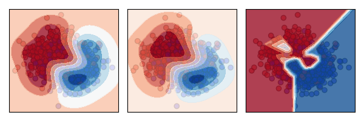

While neural networks are powerful, they aren't always the best tool for the job. This post explores cases where simpler models outperform them, with Python code snippets and experiments.
Neural networks (NNs) are a hot topic nowadays, mainly because they are one of the best options for computer vision, natural language processing, reinforcement learning, and, more recently, with new LLMs coming out every other day. However, in many cases, it is better to use a different ML algorithm. In this post, I’ll share a few examples where NNs are not the best choice, highlighting situations where other ML models can deliver better results.
Neural networks are good at modelling complex, non-linear relationships. However, this strength can turn into a weakness when:
Let’s go through some experiments to show these scenarios.
On small datasets, NNs can easily overfit to the training data. Other algorithms may capture the underlying patterns more effectively, allowing them to generalise better.
In the example below, I compare a neural network with a Gaussian Process classifier (GP) and a Support Vector Machine (SVM). To emphasise the difference, I limit the training set to just 50 data points. The tests are repeated 100 times to ensure that what we are seeing is not just luck.
scores_dict = {
"SVM":[],
"Gaussian Process":[],
"Neural Network":[]
}
for seed in range(100):
# Synthetic dataset
X, y = make_moons(n_samples=1000 ,noise=0.9, random_state=seed)
X_train, X_test, y_train, y_test = train_test_split(X, y, test_size=0.95, random_state=seed)
# Classifiers to compare
svm = SVC(random_state=seed)
gp = GaussianProcessClassifier(random_state=seed)
nn = MLPClassifier(max_iter=10000,random_state=seed)
classifiers = [
("SVM", svm),
("Gaussian Process", gp),
("Neural Network",nn)]
# Fitting and scoring the classifiers
last_models = []
for name, clf in classifiers:
clf = make_pipeline(StandardScaler(), clf)
clf.fit(X_train, y_train)
score = clf.score(X_test, y_test)
scores_dict[name].append(score)
last_models.append((name,clf))
for name, scores in scores_dict.items():
print(name)
print(sum(scores)/len(scores))
SVM
0.688778947368421
Gaussian Process
0.6964105263157895
Neural Network
0.6592210526315789
From the results, we can see that, on average, it is better to use the SVM or GP. The reason becomes clearer when we plot the decision boundary of each algorithm against the data.

The plots show that the neural network (right) is overfitting, while the other models (SVM on the left, GP in the centre) generalise better to the overall distribution.
Another place where NNs often struggle is with high-dimensional structured data that has only a small proportion of informative features. This is challenging because NNs rely on large amounts of data to learn meaningful patterns, and when most features are irrelevant, they can easily learn noise instead. Unlike models like decision trees or Lasso regression, which can automatically ignore unimportant features, NNs tend to spread weight across all inputs, making them less efficient in such cases.
In the following example, I compare XGBoost, a tree-based algorithm, against a neural network. As before, the tests are run 100 times with different random seeds to ensure reliable results.
scores_dict = {
"XGBoost":[],
"Neural Network":[]
}
for seed in range(10):
# Synthetic dataset
X, y = make_classification(n_samples=1000, n_features=200, n_informative=15, n_redundant=15, random_state=seed)
X_train, X_test, y_train, y_test = train_test_split(X, y, test_size=0.4, random_state=seed)
# Classifiers to compare
nn = MLPClassifier(random_state=seed)
xgboost = xgb.XGBClassifier(random_state=seed)
classifiers = [
("XGBoost", xgboost),
("Neural Network",nn)]
# Fitting and scoring the classifiers
for name, clf in classifiers:
clf = make_pipeline(StandardScaler(), clf)
clf.fit(X_train, y_train)
score = clf.score(X_test, y_test)
scores_dict[name].append(score)
for name, scores in scores_dict.items():
print(name)
print(sum(scores)/len(scores))
XGBoost
0.8647499999999999
Neural Network
0.76325
With 200 features but only 15 informative, the neural network has to learn which features are relevant, which is difficult unless regularization (L1/L2, dropout, batch norm) is applied effectively. On the other hand, XGBoost automatically identifies the most relevant features (15 informative features) while ignoring the irrelevant 185 noisy ones.
Interpretability Needs: In many applications, it is not sufficient to just predict the next label. Often, it is essential to provide the decision maker with the reasoning behind the decision. When using neural networks, it is much harder to interpret and understand this reasoning, while other models, such as decision trees or linear models, offer more transparent and easily interpretable decision-making processes.
Initialisation sensitivity: One of the strengths of neural networks is their non-linearity, which enables them to model complex scenarios. However, this also leads to a non-convex loss function with multiple local minima. As a result, different random weight initializations can cause the network to converge to different local minima, potentially affecting the model’s performance.
Many hyperparameters: Neural networks require tuning a number of hyperparameters, such as the number of hidden neurons, layers, learning rate, and the number of training iterations. Finding the optimal combination of these parameters is crucial for achieving good performance, but it can be time-consuming and computationally expensive.
While neural networks are powerful, they are not always the best choice. Simpler models can outperform them in terms of accuracy, efficiency, and interpretability, especially with small datasets, tabular data, or when transparency is crucial. Selecting the right model requires a deep understanding of both the data and the problem at hand.
I would like to thank my friend Aldo Encarnacion and my wife Jagoda Hevia Karpowicz, as it was through our discussions that the idea for this blog post was born.